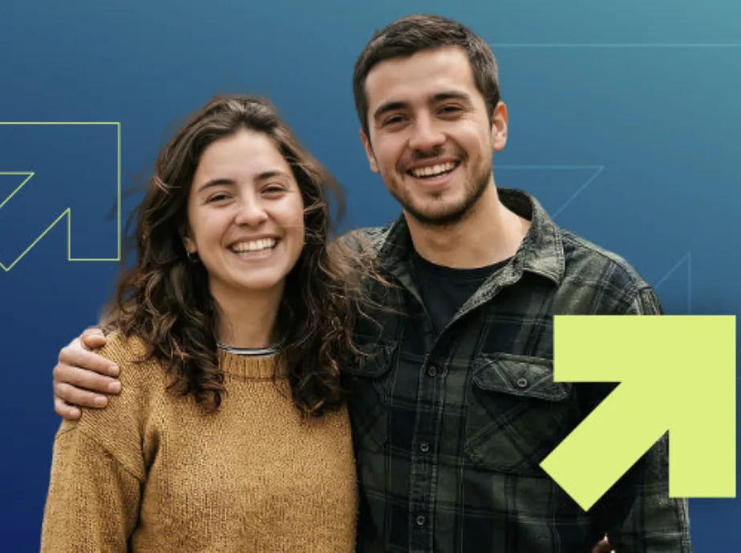
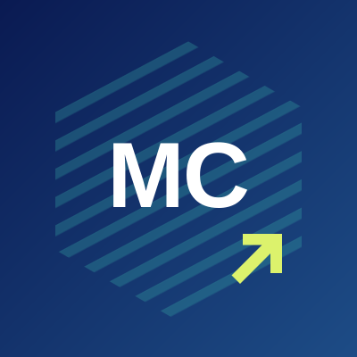

Puerto Aysén, Casa Central
Lago Portales #301
Informaciones: 67 233 1724
Admisión 2027
10 carreras de Técnico de Nivel Superior en Puerto Aysén y Coyhaique, en el centro de formación técnica público de la región.

Somos el CFT Estatal de la Región de Aysén. Formamos técnicos para el trabajo que existe aquí.
Casa Central en Puerto Aysén y sede en Coyhaique, cerca de tu casa y de tu red.
Cada carrera entrega el título de Técnico de Nivel Superior en su especialidad.
Revisa dónde podrás trabajar al titularte. Cada carrera tiene su folleto con el perfil de egreso completo.
Procesos Acuícolas
Pisciculturas, hatcheries, centros de engorda, plantas de proceso y laboratorios de patología.
Electricidad
Constructoras y contratistas en baja, media y alta tensión, mantenimiento y montaje industrial.
Automatización y Robótica Industrial
Pesca industrial, minería, energía, sanitarias, alimentos y transporte.
Construcción y Obras Civiles
Constructoras, inmobiliarias y consultoras, como dibujante, proyectista o supervisor de obras.
Veterinaria y Producción Agropecuaria
Asistencia clínica de animales menores y mayores, y empresas de producción animal.
Turismo
Agencias, tour operadores, hoteles, cruceros, transporte y oficinas de turismo.
Administración de Empresas
Asistente, coordinador, analista o ejecutivo en empresas públicas y privadas.
Enfermería
Hospitales, clínicas, SAMU, SAPU, SAR y atención primaria, públicos o privados.
Educación de Párvulos y Primer Ciclo de Educación General Básica
JUNJI, Integra, SLEP, jardines particulares y escuelas desde NT1 hasta 4.º básico.
Educación Diferencial
Jardines, colegios con PIE, escuelas especiales y programas de educación de adultos.
Lago Portales #301
Informaciones: 67 233 1724
José Miguel Carrera #133, Coyhaique
Informaciones: +569 3209 9908
El equipo de Admisión y Comunicaciones responde tus preguntas sobre carreras, sedes y beneficios estudiantiles.
Admisión y Comunicaciones
+569 2114 2085Becas y beneficios
Beneficios estudiantilesHeamna Manzur V.
h.manzur@aysencft.cl
Marión Cruz
m.cruz@aysencft.cl